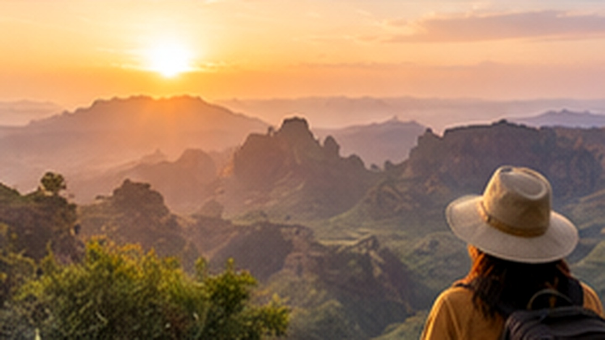

01
Region beachten
Temperatur und Niederschlag unterscheiden sich stark zwischen Hochland und tieferen Regionen.
Äthiopien bietet sehr unterschiedliche Höhenlagen und regionale Klimazonen. Gute Vorbereitung bedeutet deshalb: Route und Jahreszeit gemeinsam betrachten.

Übersichtlich, praktisch und auf die Reisevorbereitung ausgerichtet.
Temperatur und Niederschlag unterscheiden sich stark zwischen Hochland und tieferen Regionen.
Morgen und Abend können in höheren Lagen deutlich kühler sein.
Saisonale Niederschläge können Straßen, Wanderungen und Tagesabläufe beeinflussen.
Leichte Kleidung mit einer warmen Schicht und Sonnenschutz kombinieren.
Äthiopien bietet sehr unterschiedliche Höhenlagen und regionale Klimazonen. Gute Vorbereitung bedeutet deshalb: Route und Jahreszeit gemeinsam betrachten.
Ein sinnvoller Ablauf hilft, wichtige Punkte rechtzeitig zu erledigen.
Region, Aktivitäten und persönliche Vorlieben gemeinsam berücksichtigen.
Höhenlage und Saison in die Packliste einbeziehen.
Wetter und lokale Bedingungen bei Ausflügen berücksichtigen.
Wir stimmen Reisezeit und Route auf Ihre gewünschten Regionen und Aktivitäten ab.